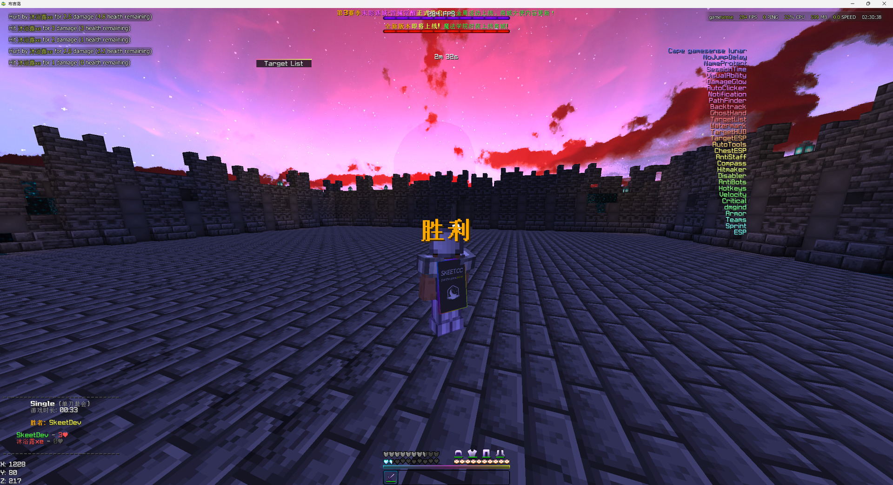

mc 1.20.1 · forge 47.4.20
mc 1.21.8 · neoforge
java 17
为 Minecraft 而生的注入式客户端。
单一文件交付，Native DLL 注入与硬件指纹伪装，
针对主流反作弊深度调优。
skeet>
284fps peak
92modules
7categories
0runtime deps
↓ scroll to descend ↓
root@skeet-node:~#
open --live
in game
实战画面PVP 对局胜利瞬间 —— 模块列表、性能监控、伤害日志、计分板,全部在客户端内实时渲染。

模块列表
右侧悬浮的分类模块列表,当前状态一目了然。
性能监控
284 FPS / 0 PING / 25% CPU / 569 MB 常驻显示。
伤害日志
每次命中记录伤害值与剩余血量,左上角滚动。
计分板
胜者、双方血量与对战时长实时同步。
root@skeet-node:~#
./skeet --hud
in-engine render
界面系统截图里每一个像素都在客户端内渲染 —— 性能、坐标、伤害、计分,全部实时。
perf monitor
284 fps · 0 ping
帧率、延迟、CPU 占用与内存常驻显示。截图中实测 284 FPS / 0 PING / 25% CPU / 569 MB。
coordinates
X · Y · Z
实时位置坐标常驻显示,快速判断站位与距离。
damage log
伤害与剩余血量
每次命中记录伤害值与剩余血量,左上角滚动显示。
scoreboard
胜者 · 血量 · 时长
对战比分实时同步,当前胜者与双方血量一目了然。
target info
名称 · 血量 · 距离
指向的目标实时显示名称、血量与距离,配合 TargetESP 使用。
localization
完整中文界面
模块名、设置项与通知全部汉化,英文模式可选。
root@skeet-node:~#
cat FEATURES.md
why skeet
六个理由
01
单一文件交付
一个 EXE 装下注入器与全部载荷。不安装、不配置、不依赖任何运行时组件 —— 丢过去就能用。
zero runtime deps
02
Native 层绕过
DLL 直接加载进目标进程，不经过任何 mods 路径；硬件指纹在命令发出前被替换，服务器收到的是伪造的 hwid。
native bypass
03
深度反作弊调优
针对 GrimAC、ACA、Themis 逐项对齐具体检查项 —— 不是笼统的"绕过"，而是逐条处理。
bypass suite
04
自带补丁引擎
注解式的字节码补丁框架，不依赖 Mixin。补丁在类加载那一刻完成，无需额外容器。
no mixin
05
92 个模块 · 7 大类
战斗、移动、玩家、渲染、漏洞、世界、杂项。覆盖完整对局，从起手到收尾。
92 modules
06
游戏内什么都有
点击 GUI、通知系统、目标 HUD、音乐与歌词、动态岛屿、中英双语 —— 全在一个客户端里。
2 languages
root@skeet-node:~#
./skeet --modules
92 modules · 7 categories
模块系统按功能分区组织。完整列表与开关在游戏内点击 GUI 中浏览。
combat
战斗
5 shown
Critical · Velocity · Hitmarker · DamageGlow · Backtrack
render
渲染
8 shown
ESP · TargetESP · TargetHUD · TargetList · ChestESP · Watermark · NameProtect · dmgind
movement
移动
3 shown
Sprint · AutoTool · NoJumpDelay
defense
防御
4 shown
AntiStaff · AntiBots · Armor · Disabler
utility
工具
4 shown
AutoClicker · Compass · GhostHand · PathFinder
system
系统
5 shown
Hotkeys · SessionTime · Notification · Teams · VisualAbility
92 个模块 · 7 大类 —— 上面展示的是实战截图中可见的部分,完整清单在游戏内点击 GUI 中按分类浏览。
root@skeet-node:~#
./skeet --bypass
tuned
反作弊调优不是"绕过反作弊"一句话 —— 每个检查项都单独对齐。
GrimAC槽位回弹 · 旋转判据 · 移动包修正
ACA切换节奏 · 背包频率 · 旋转步进
ThemisBlink 行为对齐
✓ 槽位回弹 重复的槽位包直接拦下， 不留下可判定的痕迹。 ✓ 背包频率 打开与关闭之间的间隔被 重新排布，避开频率判据。 ✓ 旋转步进 视角变化按服务端预期的 离散步长量化，不出现异常跳跃。 ✓ 移动包修正 越界字段在发出前被修正， 同时保留真实的位移数据。
# 绕过不只在 Java 层 —— # native 层同样在做。 Native DLL 注入 直接加载进目标进程， 不经过 mods/ 路径，也没有第三方容器。 硬件指纹伪装 拦截发出的聊天命令， 把 hwid / verify / mac / disk 字段 替换成随机生成的硬件指纹。 服务器收到的是伪造的值 —— 硬件识别对不上号。 ⚠ 覆盖命令：/hwid · /verify · /mac · /disk
root@skeet-node:~#
./skeet --platforms
dual version
两个版本，一个文件加载器读取目标进程的启动信息自动判断版本，判断不出来会直接拒绝注入。
v1
1.20.1
Forge 47.4.20
主线版本，完整功能覆盖。
v2
1.21.8
NeoForge
跟随新版本迁移，持续维护。
core
Java 17
Mojmap
基于官方字段名，不依赖第三方映射。
root@skeet-node:~#
man faq
read before asking
FAQ
一个面向 Minecraft 的注入式客户端。它不是 Forge mod —— 不走
mods/ 加载路径，而是在 JVM 层面完成自身注入与字节码补丁。支持 1.20.1 Forge 与 1.21.8 NeoForge 两个版本，以单一 EXE 文件交付。
没有安装步骤。一个文件，Qt6 完全静态链接，不需要装任何运行时组件。
用正常方式启动游戏后运行加载器，它会列出当前系统里所有 Minecraft 实例，选中一个点注入即可。
用正常方式启动游戏后运行加载器，它会列出当前系统里所有 Minecraft 实例，选中一个点注入即可。
不能。
mods/ 加载路径不被支持，不要把 jar 丢进 .minecraft/mods/。正确方式是走注入路径。
调优针对 GrimAC、ACA、Themis 三类，处理具体到每个检查项（槽位回弹、背包频率、旋转步进、移动包修正等）。
另外还有 Native 层绕过：DLL 直接注入不走 mods 路径，硬件指纹（hwid / verify / mac / disk）在命令发出前被替换成随机值，服务器的硬件识别对不上号。
另外还有 Native 层绕过：DLL 直接注入不走 mods 路径，硬件指纹（hwid / verify / mac / disk）在命令发出前被替换成随机值，服务器的硬件识别对不上号。
92 个模块，7 大类：战斗、移动、玩家、渲染、漏洞、世界、杂项。完整清单在游戏内的点击 GUI 里按分类浏览 —— 那里是最准确、最及时的来源。
有。这个客户端是为特定服务器的反作弊机制设计的，在受限制的服务器上使用可能违反游戏规则与服务器条款，导致封禁。使用者需自行评估并承担全部后果。
本项目与 Minecraft / Mojang / Microsoft 无任何关联。
本项目与 Minecraft / Mojang / Microsoft 无任何关联。